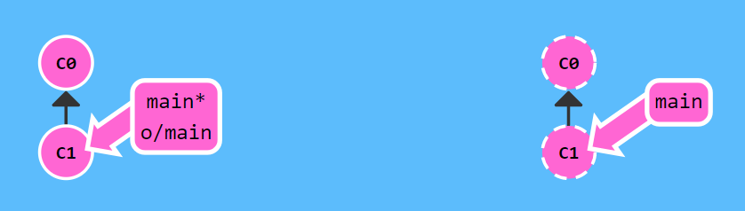
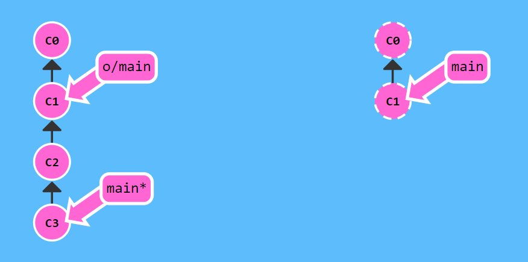
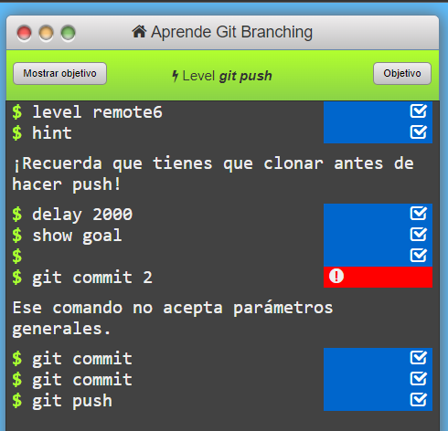
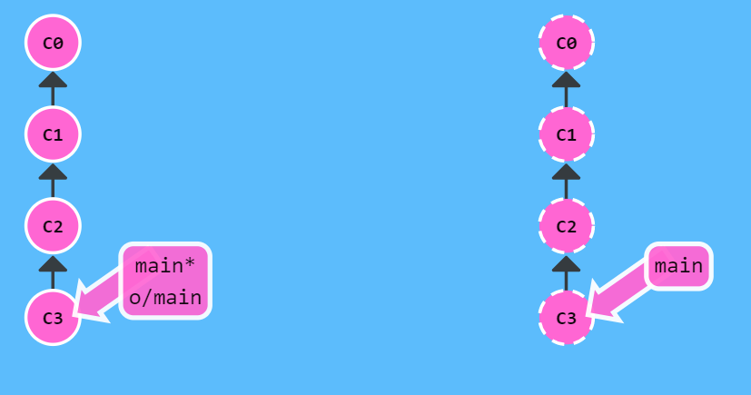

Es útil tener un lugar donde se guarden los cambios o los avances del trabajo que estemos realizando,
eso son los repositorios remotos, que permiten almacenar el trabajo en un dispositivo a distancia donde más usuarios pueden descargarse el trabajo
o enviar los cambios que hayan implementado para compartirlos entre ellos.
A la hora de compartir los avances sería poco efectivo e impráctico copiar todo el trabajo al repositorio y encontrar archivos repetidos.
Preferiblemente deseamos guardar solo los cambios que hayamos hecho
La solución que permite enviar tus actualizaciones del trabajo al repositorio, es el comando “git push”.
En esta imagen vemos como la unidad de trabajo local está sincronizada con el repositorio:
Si avanzamos trabajo en nuestra unidad local realizando modificaciones nuestro arbol de trabajo local varioará pero no lo hará el del repositorio
El ejercicio quiere que copiemos los cambios que hayamos hecho en nuestra unidad local, (solo las modificaciones) al repositorio remoto, para ello empleamos el comando "git push":
Con esto quedarían nuestros cambios registrados en el repositorio remoto
